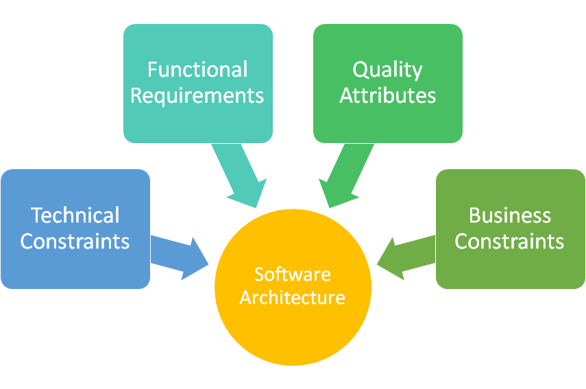

Dial M for Maintainability
Part I
Let's get acquainted!
Let's get acquainted!

| First Name: | Azat |
| Last Name: | Davliatshin |
| Experience: | 9 years in JS development |
| Expertise: | FE, BE, Clouds, Mobile, Legacy |
| Criminal Records: | Had to force push changes into production branch |
Agenda
Agenda
- The task definition
- Straightforward solution: pros and cons
- Maintainability <- QA <- ASR
- Maintainability Tactics
- Design
- Tools
The task definition
.svg)
Straightforward solution
import { json2csv } from 'json-2-csv';
import { PutObjectCommand, S3Client } from "@aws-sdk/client-s3";
const urlAPI = "...";
const tokenAPI = "...";
const options = {
headers: '' // use tokenAPI
};
const fetchResponse = await fetch(urlAPI, options);
const data = fetchResponse.json();
const csv = await converter.json2csv(data);
const client = new S3Client({});
const command = new PutObjectCommand({});
await client.send(command);
import { json2csv } from 'json-2-csv';
import { PutObjectCommand, S3Client } from "@aws-sdk/client-s3";
const urlAPI = "...";
const tokenAPI = "...";
const options = {
headers: '' // use tokenAPI
};
const fetchResponse = await fetch(urlAPI, options);
const data = fetchResponse.json();
const csv = await converter.json2csv(data);
const client = new S3Client({});
const command = new PutObjectCommand({});
await client.send(command);

import { json2csv } from 'json-2-csv';
import { PutObjectCommand, S3Client } from "@aws-sdk/client-s3";
const urlAPI = "...";
const tokenAPI = "...";
const options = {
headers: '' // use tokenAPI
};
const fetchResponse = await fetch(urlAPI, options);
const data = fetchResponse.json();
const csv = await converter.json2csv(data);
const client = new S3Client({});
const command = new PutObjectCommand({});
await client.send(command);
PROS
- Quick
- Simple
- Plain
CONS
- Change request is time consuming
- Similar functionality request
- Error handling
Solution is not maintainable
Maintainability
ASR
Architecturally significant requirements
ASR
QA
Quality attributes
QA
A QUALITY ATTIRBUTE (QA) is a measurable or testable property of a system that is used to indicate how well the system satisfies the needs of its stakeholders
QA
- Performance
- Usability
- Reliability
- Security
- Maintainability
- Availability
- Scalability
- ...
Maintainability
(Modifiability)Maintainability
QA deals with change and the cost in time or money of making a change, including the extent to which this modification affects other functions or quality attributes. (SEI)
Maintainability Tactics
Maintainability Tactics

Cohesion & Coupling

Maintainability Tactics
Design
Design Principles
*
Patterns
"Tools"
"Tools"
- Development Guidelines -> Code Review
- Static code analysis
- SonarCloud...
- Tests
Thank you!
To be continued